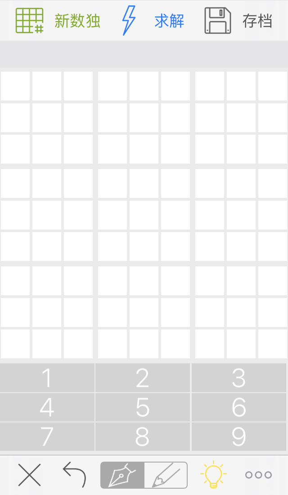
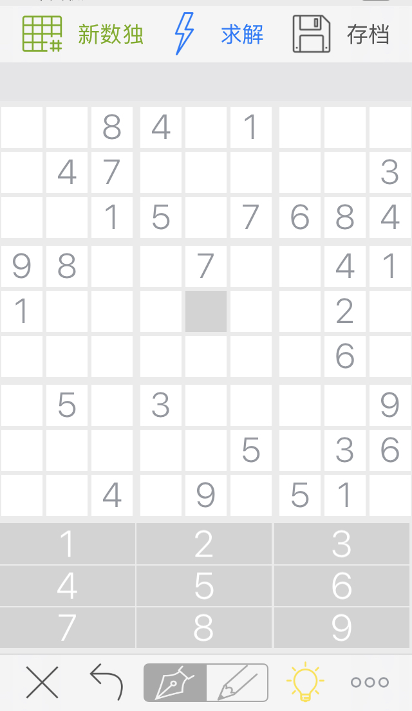
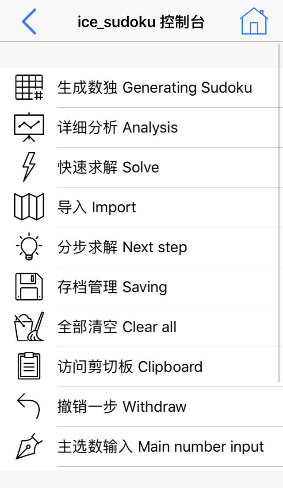
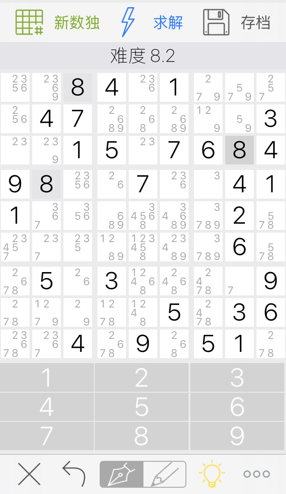
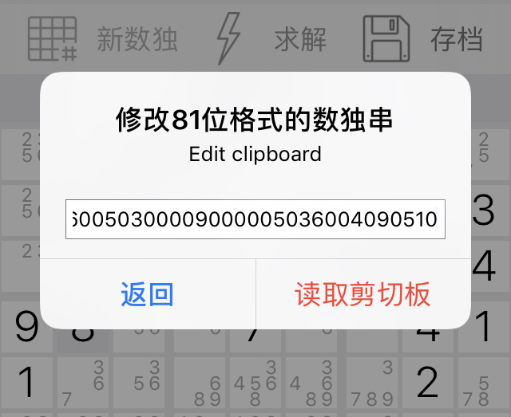
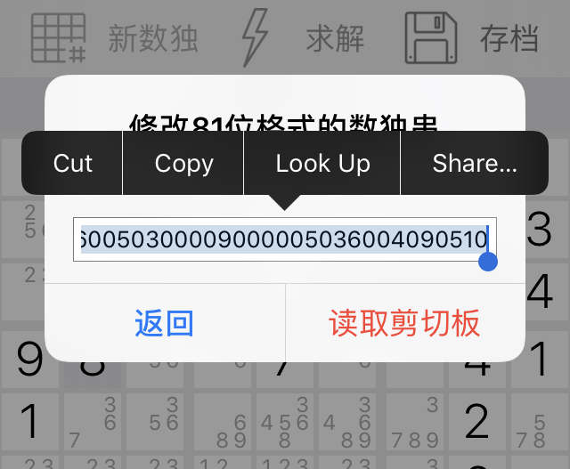
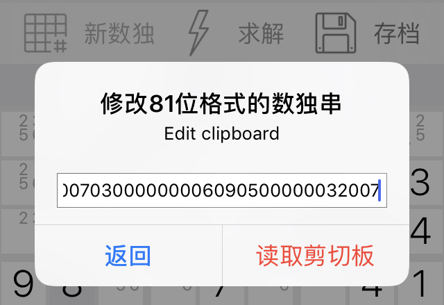
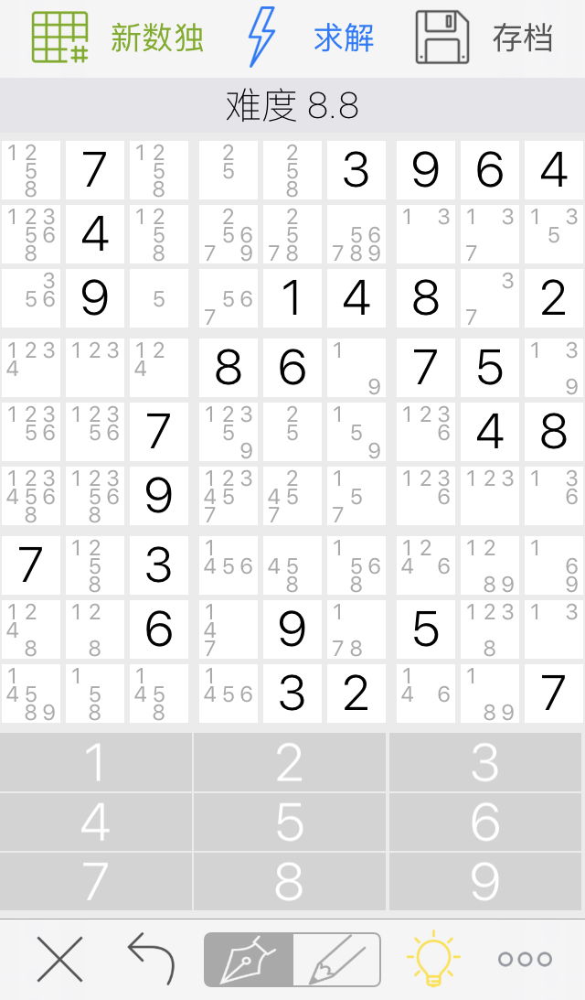

ice sudoku 帮助手册
认识主界面

最上方有生成数独按钮，求解按钮，和数独存档管理按钮

生成数独时，分为新手，简单，中等，困难，顶尖。

这是刚才生成的顶尖数独，评估等级8.8
另外ice
sudoku采用了快速切换主选数和候选数输入的方式，当你在同一个格子点击两次以上时就会自动切换主选数候选数输入。当处于候选数输入模式时，当前格已经存在的候选数会变成黑底白字，只需要点击数字按钮就可以清除或者添加候选数了。
钢笔图标代表当前处于主选数模式，铅笔则代表当前处于候选数模式，你也可以直接点击下方的钢笔铅笔图标直接切换主选数候选数的输入。
左下角的两个按钮分别是删除当前格的数字以及撤销一步
认识控制台 Console

点击左上角的省略号图标就能进入ice sudoku控制台，访问ice sudoku的所有功能

这是详细分析，可以将求解当前数独需要的所有技巧以及数量显示出来，由于ice sudoku高度依靠随机的方法，所以每次分析的结果可能会不同。
分步求解
只要点击下方省略号旁边的灯泡按钮就可以分步求解，并且如果点击具体方法旁边的圆圈i就可以查看这一步的具体求解思路了。

比如这一步使用了比较基本的Hidden triple策略

下一步使用了比较基本的Hidden pair策略

这一步使用了XY-wing策略，如果是屏幕比较小的设备比如iphone 7上方是不会显示完整的消息的，如果需要查看完整的消息点击那个圆圈i的标志就行了

这是所有顶尖难度肯定需要的复杂数独解决方法，反向推断，按照弧线大家很容易看到解决思路。根据推断的复杂程度分为(推断,强力推断，超级推断，动态推断).

全部求解完了，需要对答案的时候可以使用上方的蓝色闪电⚡️按钮

当然求解按钮可以快速求解任意可求的数独，用来对答案有点大材小用了。
有关外部导入 about import

先通过右下角的省略号图标进入控制台，点击全部清空

在空白的板子上输入你见到的数独,之后进入控制台后点击导入就行了


你也可以通过ice sudoku的剪切板来快速导入81位串格式的数独，ice sudoku windows版和macOS版本都提供了81位串格式数独，方便不同设备之间的导入。

到控制台中点击访问剪切板，就可以编辑剪切板的内容，读取剪切板或者取消更改返回了。

比如通过ice sudoku macOS版本生成了一个数独，导入到iphone,只要全选原来的串，之后直接覆盖粘贴，最后点击读取剪切板就行了。

